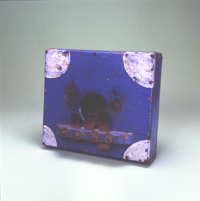

La Marímbola: ¿Tiene Lenguas o
Tiene Dedos?
El Diario de Caracas
20-8-1999
La Marímbola pareciera ser una mano con dedos hacia arriba, pero también se puede describir como una boca abierta con muchas lenguas que producen sonidos. Si son dedos o lenguas, sería más justa la última versión ya que la lengua es una de las partes del cuerpo humano encargada de producir los sonidos. Pero como la Marímbola se ejecuta con los dedos, se siente al tocarla que se efectúa un saludo prolongado de mano a mano, es decir, entre dedos. Luego de una charla sobre este tema en Accra, Ghana, en manos del musicólogo austríaco Gerhard Kubik, especialista en música africana, él me afirmó que esta familia pertenece a los Lamelófonos o Lenguanófonos y está relacionada a las marimbas y xilófonos que utilizan lingotes o barras de madera golpeados. Curioso el hecho de que en Venezuela, tanto en Trujillo y especialmente en Oriente, a este instrumento se le llama Marímbola, Marímbula o Marimba, sin tener ninguna relación aparente en su morfología con la marimba, instrumento más conocido de filas de maderas con resonadores correspondientes.
El idiófono de lengüetas de punteo que hoy presentamos se utiliza como bajo en agrupaciones de instrumentos de cuerda, ofreciendo de tres a cinco sonidos dependiendo del número de flejes en el instrumento. Se tocan con los dedos de ambas manos, protegiéndose con un pedacito de cuero duro. El sonido de la Marímbola es como el de un contrabajo pulsado o "pizzicato": grave, seco y pulsante. Es típico de Oriente junto a la mandolina, bandola, cuatro y guitarra, pero, según Israel Girón de Fundef, también se ha registrado como el bajo en la agrupación de joropo llanero de arpa, cuatro y maracas en Tinaquillo, edo. Cojedes en 1975. Su nombre se puede además confundir con otros instrumentos homónimos que son totalmente diferentes: la Marimba de Cumanacoa, edo. Sucre, instrumento de una sola cuerda pulsada, o con la Marimba de Guardatinajas, edo. Guárico, madera larga con un alambre tensado que se percute para el joropo junto a una vejiga inflada, ambos familia del Carángano, el monocordio venezolano.
Al oír la Marímbola es difícil imaginarse que sus parientes originarios en África son completamente lo opuesto: pequeñas cajas resonadoras de tapara o madera con lengüetas metálicas que producen un ambiente sonoro elaborado, mágico, duradero y brillante, de uso cercano para la meditación individual. Es el instrumento predilecto de los Shona en Zimbawe, conocido como la Mbira o también Zanza, Kalimba o piano de mano. Una traducción de su sonido podría ser la mezcla aguda entre un vibráfono y un arpa tuyera.
Ya en la urbe internacional, se aprovecha su
magia encantadora en los rodillitos de música con mecanismo de
reloj que existen en cajitas de prendas, las cuales repiten una
melodía al abrirse. Otras culturas del Nuevo Mundo como los
Saramaka de Suriname, desarrollaron una versión de la Mbira
hecha completamente de bambú, el Kede-Benta. Al no tener las
lengüetas de metal y carecer además de la caja resonadora, su
sonido es seco y punteado, como una escampada rítmica. En Brasil
la Mbira se mantuvo casi idéntica a su semblante africano. No se
explica porqué en Venezuela y en el Caribe se convierte en un
animal grande, grueso y parco, que sirve de taburete al
ejecutarse, y desaparece una de sus características principales,
la aureola mágica y etérea. No obstante, nuestra Marímbola, en
buenas manos, recobra la esencia cultural de la Venezuela
caribeña: una lengua cargada de humor.